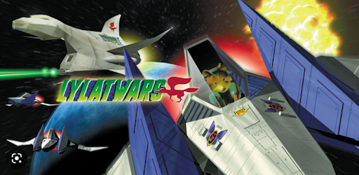

This game has been done through an university project in collaboration with 3 more students and it is our first game.
I will describe the features of the game and how far we've actually gotten to reaching our goals, after which
I will talk about my contribution to the game.
Features of the game
The most important mechanics of any FPS game, including ours, is to be able to move and to shoot.
The shooting system is hitscan and it has a limited range.
The movement of the spaceship is three dimensional, so it can pitch, yaw and roll, like real aircraft.
More about this later.
The game also has enemy spaceships that attack you on sight, since you're a space pirate set out for plunder.
As described in the subtitle, you can gun down enemy ships, which will drop credits that you can collect.
Upgrading the spaceship is not implemented, but this will be explained in more detail later on.
Another essential feature of the game, that can be seen in the gif above, is that enemies that shoot at you will show a marker
that indicates their position relative to where you are currently looking at.
Two other things worth mentioning is that the spaceship can boost its movement speed using its thrusters,
but it has to recharge before it can be used again. This can be seen in the gif above, in the second bar on the bottom of the screen.
The spaceship also has a rechargable shield, which is the blue part of the first bar on the bottom of the screen, that automatically starts
to recharge after not taking damage for a few seconds.
Scope of the game and related information about the project
In this section I will talk about the scope of the project, what we achieved and what we didn't, and overall information about the
game and the project.
Firstly, I'd like to show the story of the game, the core loop and the visuals that we were going for. This part
is about the prototyping of the game.
Story
You are an ensign of the feared Argonian Rebellion, a group of rogues known for plundering cargo ships and causing general mayhem.
Your task is to raid ships and keep your convoy safe in the meantime. Since the Federation has put
their eye on the Rebellion, this task is more dangerous than ever before.
Will you be able to hold your own in a rain of federation laser blasts, while still plundering the cargo holds of their convoys?
Visual style
Retro, low polly

Core loop
You spawn near the mothership, receive a quest about destroying enemy spaceships, complete it, and return to the mothership to
deliver the plunder, which you can spend to upgrade your ship.
Scope of the project
The scope of the project is described well in the core loop. This is what we were going for, but it is important to know that
this was our first game, and that we had 4 days to complete this, while not all members of the team had very good programming skills.
The whole game took two weeks, but the first week was about brainstorming, prototyping and documenting the game.
What we achieved:
- Fully functional movement of the spaceship, being able to pitch, roll and yaw, and the boost mechanic
- Being able to shoot and destroy enemies
- Enemy AI that follow and attack you, and act like a swarm, but that will de-aggro if you move far enough
- HUD, including the bars at the bottom for health and thrust, and the enemy markers that are displayed around the crosshair
- Quests, which are looting the credits that the enemy spaceships drop after being destroyed, looting cargo
that is floating around the map, and to kill all enemy spaceships, which will give the player a load more credits
What we didn't achieve:
- An active text/indicator of the objectives and quests
- Being able to return to the spaceship after finishing the objectives
- Being able to spend the cargo and make upgrades to the spaceship
- Better lighting, since the enemy spaceships are hard to see
The game will be playable on itch.io soon.
My contribution to the project
In this section, I will discuss the significant contributions I made to the project through
meticulous documentation in the form of development logs (devlogs).
Spaceship movement devlog
- Challenge:
Implement movement mechanic for the spaceship
(player) in our game pie group game.
- Methods:
Library:
1. Available product analysis - Analyzed already existing
space games that use 3d movement (pitch, roll and yaw): Elite Dangerous
2. Literature study - Reading documentation about
adding force to rigidbodies, character movement and 3d
movement.
Links: Unity character controller
- Results:
Functionality to move and control the spaceship in the game. The
spaceship can move forward and backward by giving it thrust or
reversing, while the pitch and yaw are controlled by the mouse or
controller right analog stick. Rolling the ship can be done with the
correspondent key presses. The ship has a little bit of drag in order to
make it more realistic, for example when starting to roll, the ship will
stop rolling at a certain time because of the drag, and it will not
continue to roll forever, since it's not affected by gravity.
- Validation:
The mechanics of the movement of the spaceship are working
properly, but in order to make it a better experience for the player,
fine tuning of variables such as horizontal speed, vertical speed, thrust
speed etc. need to be tuned. This is done with the help of the group
members and testing it after every iteration.
- Next steps:
Make the shooting mechanic of the spaceship.
Spaceship shooting devlog
- Challenge:
Implement shooting mechanic for the spaceship (player) in our game
pie group game. This mechanic is also used for AI ships that shoot the
player.
- Methods:
Library:
1. Available product analysis - Analyzed already existing
games that use the hitscan shooting mechanic: CS:GO.
2. Literature study - Reading documentation on RayCast
in Unity and how other games implement the shooting mechanic
(projectile system instead of hitscan system)
Links: Unity raycast
- Results:
Functionality to shoot for the spaceship. The spaceship can shoot only
one type of projectiles (no multiple weapons) and it makes use of a
hitscan shooting system. This means that the travel time of the bullet
is instant, but I added a range so that the bullet does not travel an
infinite range. The bullet is always shot at the center of the screen,
that being the center of where the camera is, and bullets deal a set
amount of damage to enemies. Health was also added to enemies, and
also damage can be dealt only to objects that have the “Target” tag
and they must have a rigidbody because I added a little bit of impact
force when the bullet hits the target, to make it more realistic.
- Validation:
The shooting mechanic is fully working, but values such as damage,
health of enemies and range need to be tweaked in order to create the
best user experience. This is done with the help of the group members
of the game pie group, and testing is done after every iteration.
- Next steps:
Add multiple types of weapons to the spaceship